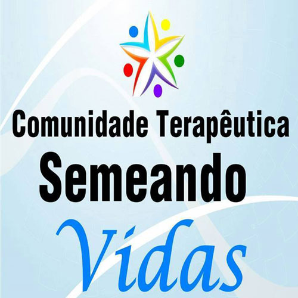

Objetivo
Recuperar valores psico, social e espiritual do dependente: ( terapia ocupacional reeducando o dependente a cuidar do local onde mora, palestras de motivação para incentiva-lo a voltar ao convívio social e meditações com base na Bíblia para voltar a ter contato com o Criador Deus).
Prevenir e Orientar a população sobre os malefícios que as drogas podem causar , através de palestras e seminários em escolas, universidades, empresas e em outras instituições;
Prestar assistência às famílias dos internos;( realizando reuniões de codependencia conscientizando e informando a família sobre a doença do dependente e como agir com ele).
